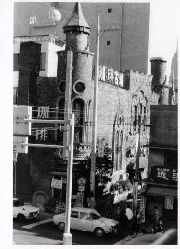
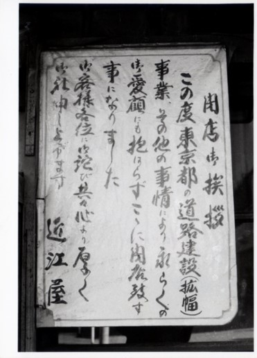
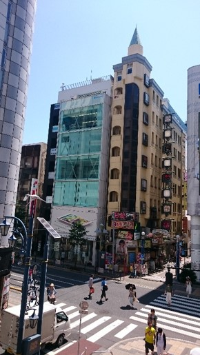

河合塾吉祥寺現役館



左の写真の右端に写っている「近江屋」という店舗のあった場所には、現在「河合塾吉祥寺現役館」がある。近江屋はボタンや糸などの服飾用品を扱う店であった。左の写真で小さく見える貼り紙を拡大したのが中央の写真である。「この度東京都の道路建設（拡幅）事業、その他の事情により、永らくのご愛顧にも抱はらずこゝに閉店致す事になりました」と書かれている。聞き取り調査でも、この並びの店舗は道路拡幅工事が本格化した1975年（昭和50年）ごろ一斉に閉店したそうだから、この写真もその頃撮影されたものだろう。
同じ場所を最近撮影した右の写真の中央に写っている「古城ビル」は、左の写真と見比べると分かるように、かつてクラシック音楽を聞かせることで有名な純喫茶「珈琲古城」であった。１階、２階と地下があり、階段を上っていくと少し暗くてステンドグラスの窓があり、独特の雰囲気があったそうだ。また『町田の独り言』というウェブサイトの「吉祥寺の昔の音楽喫茶」という記事によると地下では人影もまばらで、学ラン姿の高校生が隠れてタバコを吸っていたとか･･････。
普段何気なく街を歩いていると気付かないが、今でも古城ビルの屋上にはかつての「珈琲古城」を彷彿とさせる尖塔が顔を出している。